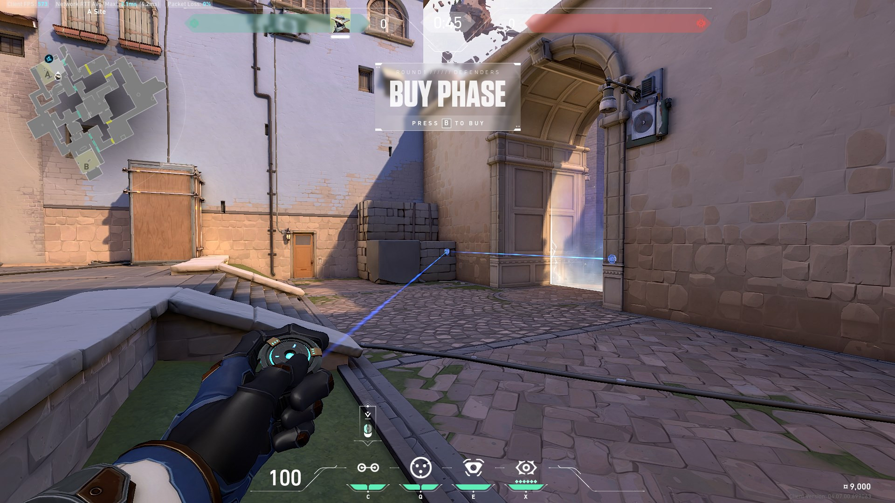
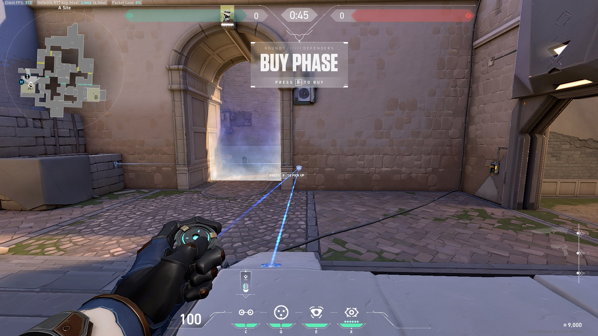
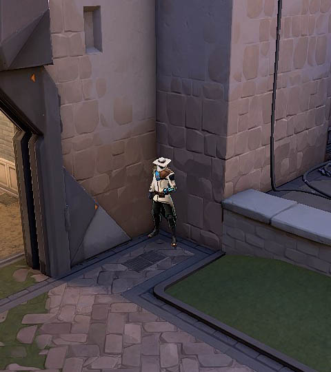
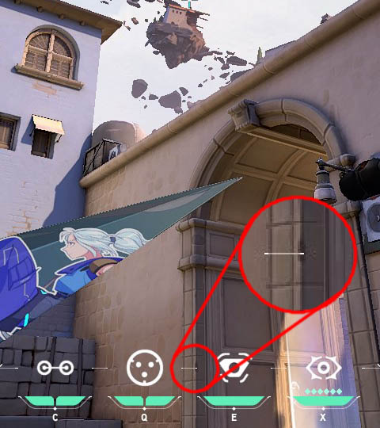
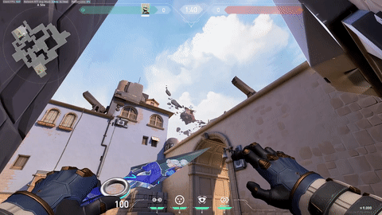
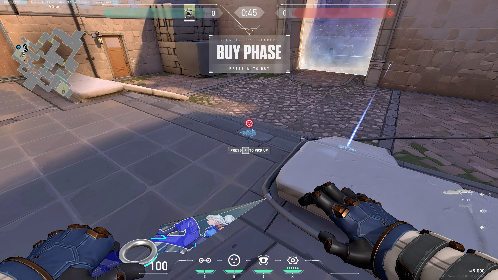

ASCENT
DEFENSE
A SITE: DEFENSE_01
Camera
Camera goes high to check early A main.


Trapwires
First is for general use, second is useful against jett players who dash to generator.


Cybercages
First is to peek from left side of dice, second to reposition and adapt.




Playstyle
Check cameras, then peek from left side of dice with A Main oneway, when exposed use second cage reposition and adapt.